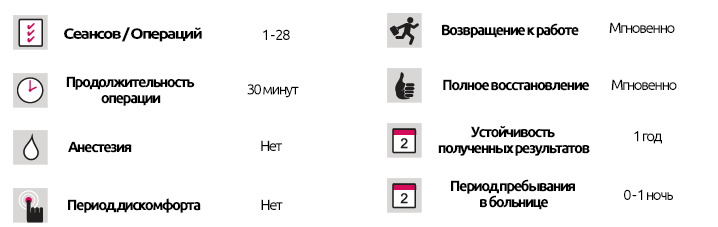

Ожирение
Ожирение
КРАТКОЕ ОПИСАНИЕ ЛЕЧЕНИЯ

Ожирение
Ожирение возникает, когда человек имеет ненормально увеличенное количество жира, находящегося в его теле. Чрезмерное потребление белков, углеводов и жиров приводит к увеличению веса. У некоторых людей это является результатом генетической и биологической предрасположенности. Лучшее лечение для таких людей - здоровое питание и физическая активность на протяжении всей жизни. Сегодня ожирение классифицируется как болезнь, а не как эстетическая проблема.
Как рассчитывается ежедневная потребность в калориях?
Для мужчин, их вес умножается на 30, а для женщин - на 25.
Например, ежедневное потребление калорий, необходимое для мужчины весом 80 кг для поддержания того же веса, составляет 2400 ккал (80 × 30) и для женщины того же веса 2000 ккал (80 × 25).
Причины избыточного веса/ожирения
- Генетические факторы. Люди, выросшие в семье, члены которой имеют проблемы избыточного веса, на 30% подвержены большему риску избыточного веса.
- Старение: с возрастом мышечная масса уменьшается, а обмен веществ замедляется.
- Плохое питание: чрезмерное потребление готовых блюд, таких как фаст-фуд и чипсы.
- Сидячий образ жизни: человек проводит слишком много времени, сидя перед телевизорами, компьютерами и за партами.
- Физиологические факторы: стресс, несчастье или переедание после строгой диеты, некоторые болезни и лекарства, беременность и употребление алкоголя.
Что показывает размер талии?
Если талия мужчины больше 40 дюймов или 34,5 дюйма для женщины, то этот человек классифицируется как имеющий избыточную массу тела. Ожирение становится еще более опасным, если жир начинает накапливаться вокруг желудка и внутренних органов, поскольку это указывает на значительно повышенный риск возникновения некоторых других заболеваний, таких как высокое кровяное давление, диабет, закупорка сердечных и мозговых артерий и связанных с ними сердечных приступов и инсультов.
Повышенный риск
Мужчины с размеров 37 дюймов и 40 дюймов
Женщины - 31,5 дюйма и 34,6 дюйма
Преимущества потери веса
Есть много преимуществ, которые могут быть получены путем потери веса:
- Снижение риска сердечно-сосудистых заболеваний.
- Повышенный уровень здорового холестерина.
- Снижение уровня холестерина и липидов в крови.
- Снижение артериального давления.
- Проще контролировать диабет.
- Профилактика или задержка латентного диабета вплоть до полного избавления.
- Лучшая самооценка благодаря хорошей эстетике.
- It is necessary not to roughly touch the nose which will be sensitive for 4 weeks and to protect it from blows.
- Glasses must not be worn for at least 2 months.
- As harmful rays harm your skin, sunlight and solariums must be avoided.
Индекс массы тела (ИМТ)
Индекс массы тела (ИМТ) используется для расчета избыточного веса человека. Он рассчитывается путем деления вашего веса в кг на ваш рост в метрах:
Классификация ИМТ:
* Может меняться с возрастом.
- НЕДОСТАТОЧНЫЙ ВЕС: 19
- НОРМАЛЬНЫЙ ВЕС: 19-24
- ИЗБЫТОЧНЫЙ ВЕС: 25-29
- 1 СТЕПЕНЬ ОЖИРЕНИЯ: 30-39
- 2 СТЕПЕНЬ ОЖИРЕНИЯ: 40+
Какми должны выглядеть быть диеты для лечения ожирения?
Цели потери веса должны быть реалистичными и достижимыми.
Количество сожженных калорий должно быть больше количества потребляемых калорий.
Идеальной диетой должна быть низкокалорийная диета, включающая продукты всех пищевых групп. Диеты, основанные на одной группе продуктов питания (овощи, фрукты или мясо и т. д.), испытывают дефицит жизненно важных питательных веществ, которые необходимы вашему организму, и могут привести к значительным заболеваниям.
На практике рассчитывается общее количество калорий, которые человек потребляет ежедневно, а количество калорий, которое они потребляют в рационе, рассчитывается путем вычитания 600-800 калорий из этой цифры.
Чтобы потерять 1 кг человек должен потреблять на 7700 ккал меньше, чем необходимо для поддержания своего веса.
Ожирение - это заболевание, которое требует длительного, часто пожизненного лечения и, если его не лечить, становится хроническим заболеванием на всю жизнь.
Важность психологии в лечении ожирения
Человек, который имеет сильную мотивацию для похудения, имеет больше шансов на поддержание своего рациона и достижение целевого веса, так как некоторые внешние факторы могут нарушить рацион питания человека:
- Отношения в семье.
- Профессиональные отношения, рабочее время, сверхурочные, напряженные, стрессовые условия труда.
- Школьный / экзаменационный стресс
- Социальные отношения, поездки, праздники, особые дни, питание после уроков, общение.
- Эмоциональные взлеты и падения.
Вы должны установить свои личные границы и внести необходимые изменения в образ жизни, чтобы было легче сказать «нет». В противном случае, ваша диета может иметь только начало и конец, и любая потеря веса будет восполнена.
Питание - это основная потребность, на которую мы также должны обратить внимание, не забывая при этом о нашей собственной биологии и обстоятельствам. Однако вы должны быть очень осторожны, так как любое небольшое изменение в нашей жизни может нарушить это равновесие или, другими словами, начать расставлять приоритеты. Хорошее и позитивное состояние ума также означает переосмысление вашей собственной самооценки.
Физические и психологические проблемы, вызванные ожирением
- Кардиологические заболевания (стенокардия, сердечные приступы и т. д.)
- Диабет 2 типа.
- Повышенное кровяное давление
- Инсульт.
- Рак (матка, молочная железа, простата).
- Высокий уровень липидов и холестерина в крови.
- Болезни желчного пузыря и камни.
- Апноэ во сне и другие респираторные проблемы.
- Нерегулярные месячные
- Снижение сексуальной выносливости / работоспособности.
- Остеоартрит
- Депрессия, эмоциональный стресс и несчастье.
- Социальная изоляция, социальная тревога и социальные проблемы.
- Повышенный риск смерти.
Важность и роль упражнений в преодолении ожирения
Упражнения являются вторым по важности компонентом снижения веса за счет увеличения количества калорий, которые сжигает организм, и любая программа по снижению веса, игнорирующая включение упражнений, имеет низкую вероятность успеха.
Человек в среднем должен совершать 7500-10 000 шагов в день, чтобы поддерживать свой текущий вес. Чтобы похудеть, программа упражнений для людей с ожирением должна включать в себя сердечно-сосудистые аэробные упражнения, которые работают во многих группах мышц, таких как ходьба, езда на велосипеде и плавание, и не требующие поднятия тяжестей. Человек должен заниматься 3 раза в неделю по 45-60 минут или по 30 минут 4-5 дней в неделю.